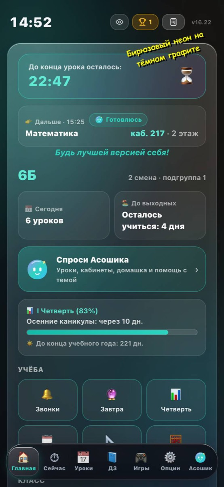
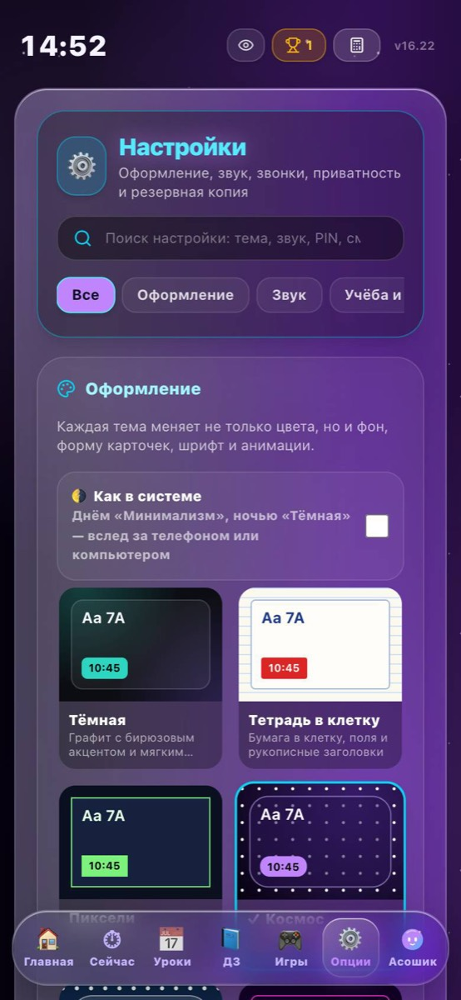
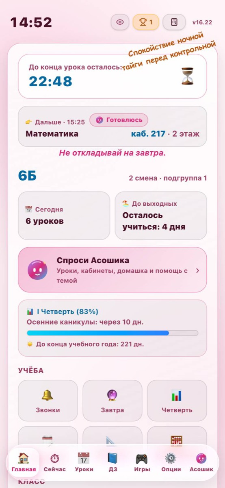

Обновления
Что нового в АСОШ Таймер — подробно о каждой версии: новые функции и все исправленные баги. В приложении это окно «Что нового» с кнопкой «Подробнее».
v16.24
14 ноября 2026НОВОЕ🖥 На весь экран на компьютере
Раньше на ноутбуке и мониторе приложение было узкой колонкой посередине, а по бокам пусто. Теперь на широких экранах (ноутбук, монитор, планшет, повёрнутый боком) оно занимает всю ширину:
- Плитки на Главной стоят по 6 в ряд, иконки и подписи крупнее.
- Нижняя панель шире и выше, значки крупнее, по ним легко попасть мышкой.
- Режим «Компактно» и Экран для ТВ остались как были.
💻 Программа для Windows и macOS
Окно сразу открывается развёрнутым на весь экран. На большом мониторе программа сама увеличивает всё, как будто нажали Ctrl и «+» в браузере: текст, кнопки и панель становятся крупнее. Если сделать окно меньше, масштаб подстроится обратно.
Полноэкранный режим без рамки окна: F11 на Windows, Ctrl + Cmd + F на Mac.
📱 Android и Samsung
- APK на весь экран на любой версии Android: фон приложения уходит под статус-бар и вырез камеры. Раньше на Android 13–14 (например, Samsung Galaxy A) сверху оставалась отдельная полоса.
- Часы и батарею видно на любой теме: на тёмных темах значки статус-бара светлые, на светлых — тёмные.
- На телефонах со старой версией WebView больше нет белых полос сверху и снизу.
- Приложение, установленное с сайта, теперь поворачивается вместе с экраном на планшетах и Galaxy Fold.
🍏 iPhone
Если добавить сайт через «Поделиться → На экран Домой», теперь появляется настоящая иконка приложения. Раньше iPhone не понимал иконку и ставил вместо неё уменьшенный снимок страницы.
🛠 Исправлено
- На компьютере приложение было узкой колонкой посередине экрана, а по бокам оставалось пустое место.
- Нижняя панель на компьютере была маленькой, по значкам трудно было попасть мышкой.
- На iPhone при «На экран Домой» вместо иконки появлялся снимок страницы.
- Chrome и Samsung Internet на Android не находили обычную картинку-иконку для установки (была только SVG).
- В APK на Android 13–14 сверху оставалась отдельная полоса под статус-бар.
- В APK часы и значки батареи могли сливаться с тёмным фоном, если в телефоне включена светлая тема.
- Приложение, установленное с сайта, не поворачивалось на планшетах.
v16.23
14 ноября 2026🔊 Новые звуки «АСОШ»
Раньше звуки были простыми «пиликами». Теперь есть отдельный набор в духе iPhone: тихий, короткий и мягкий. В его основе маримба и стекло, плюс лёгкое эхо, как в небольшой комнате. Все звуки создаются прямо в приложении, без файлов, поэтому APK не стал тяжелее и всё работает без интернета.
Как включить: Опции → Звук → Звуковой профиль → «АСОШ: мягкие звуки». Старые профили остались, вернуться можно в любой момент.
Послушай прямо здесь, нажми на любой звук:
Новый звонок АСОШ играет и в «Симуляторе звонков» на экране «Звонки», если выбран набор «АСОШ».
💎 Liquid Glass
При графике «Максимум» приложение превращается в жидкое стекло:
- Карточки прозрачные, со светлым краем сверху и бликом в углу. Цвет темы просвечивает сквозь них.
- Нижняя панель — стеклянная капсула. На Android и в Chrome фон под ней ещё и преломляется, как через линзу.
- Кнопки тоже стеклянные и упруго пружинят при нажатии.
Как включить: Опции → Производительность → Качество графики → «Максимум». В режимах «Обычное» и «Экономия» всё как раньше, так что на слабых телефонах ничего не тормозит.
Темы со своим стилем (Тетрадь, Пиксели, Комикс, Минимализм, AMOLED, Крафт, Терминал, Первая версия) остались как были: стекло бы их испортило. На iPhone стекло размытое, но без эффекта линзы, его Safari пока не умеет.



📰 Сайт обновлений
Эта страница. Окно «Что нового» в приложении теперь показывает коротко, что добавили, а кнопка «Подробнее об обновлении» ведёт сюда.
v16.22
13 ноября 2026- 🎒Добавлен 2Б класс (2 смена)
В АСОШ Таймер появилось полное расписание уроков и звонков для 2Б класса на I полугодие (понедельник — пятница, 2-я смена).
- 🏅Исправлены бейджики рядом с именами
Значки «🛠️ Разработчик», «🏆 Ветеран» и «🌱 Новичок» снова отображаются и обновляются в Профиле, Чате, Рейтинге и карточках пользователей.
- 🛠Большой фикс багов по всему приложению
Исправлены рекорды и таймеры в играх, счётчик Помодоро, добавление друзей из чата, текущая четверть по дате, звонки при смене настроек и статистика в Опциях.
🛠 Исправлено
- Бейджики «Разработчик», «Ветеран» и «Новичок» не обновлялись в чате и рейтинге, пока не перезайдёшь. Теперь меняются сразу.
- Рекорд в «Змейке» иногда не сохранялся, а достижение за 20 очков выдавалось с задержкой.
- Помодоро мог потерять помидор, если два помидора закончились подряд.
- Экран «Четверть» всегда открывался на I четверти. Теперь открывается текущая по дате.
- При добавлении друга из чата в список друзей попадал ник, а не настоящее имя.
- Экран «Звонки» не пересчитывал расписание после смены настроек и в пятницу после полуночи.
- Статистика в Опциях показывала 0 оценок. Теперь считает оценки из калькулятора.
- Одно объявление можно было отметить «прочитано» дважды.
- Сборка приложения ломалась из-за устаревшего списка библиотек (починили в тот же вечер).
v16.21
13 ноября 2026- ❤️Друзья через аккаунт
Открой профиль одноклассника из рейтинга или чата и отправь заявку. Принять её можно в своём Профиле — друзья видны на всех твоих устройствах.
- 📊Итоги четверти в дневнике
Какая оценка выходит по каждому предмету и сколько пятёрок нужно, чтобы дотянуть до следующей.
- 📘Напоминание о домашке
Вечером приложение напомнит, если на завтра что-то не сделано. Время меняется в Опциях.
- 📢Объявления с отметкой «прочитано»
Нажми «👍 Прочитал(а)» под объявлением — учитель увидит, кто из класса ознакомился.
- 👨👩👧Уведомления родителям
Родитель сразу узнаёт о новой оценке или пропуске ребёнка.
- 🖼Расписание картинкой
На экране «Уроки» кнопка «📤 Картинкой» — расписание на неделю, чтобы отправить в чат класса.
- 📱Виджет на экран телефона
В APK для Android: виджет «АСОШ Таймер» показывает, сколько осталось до звонка и какой кабинет следующий. Удержи палец на рабочем столе → Виджеты.
v16.20
13 ноября 2026- 🔒Профиль защищён
Твой профиль теперь может менять только ты. Одноклассники видят имя, ник, аватар, статус и грамоты, а фото и средний балл остаются на телефоне.
- 🛡Значок «Разработчик» не подделать
Значок есть только у настоящих разработчиков приложения, а писать в чат от чужого имени больше нельзя.
- ⬇️Обновление на Android
Кнопка на Главной снова скачивает новый APK — он ставится поверх, данные сохраняются.
🛠 Исправлено
- Любой посетитель мог включить всем заглушку «приложение недоступно». Теперь это могут только администраторы.
- Чужой профиль можно было удалить или подменить. Теперь его меняет только владелец.
- Полное имя уходило в общешкольный чат, и можно было писать от чужого имени. Больше нельзя.
- Значок «Разработчик» можно было подделать.
- APK при обновлении подгружал сайт поверх приложения вместо нового APK.
- В программе для компьютера после обновления без интернета могло открыться пустое окно.
v16.19
13 ноября 2026- 🔔Обновление по вашему желанию
Мы отказались от автоматических перезагрузок. Когда выходит новая версия, сверху появляется красная плашка, а на странице «Главная» — кнопка «Обновиться», чтобы обновиться в удобный момент.
v16.18
13 ноября 2026- 👤Полноценные профили в Чатах и Онлайне
Нажми на любого одноклассника в чате или рейтинге «Онлайн класса» — откроется его полная страница профиля с грамотами, статусом и кнопкой дружбы.
- 🏅Бейджики рядом с @именем
В профилях, чате и рейтинге появились значки: 🛠️ Разработчик (за открытие панели разработчика), 🌱 Новичок (меньше 2 дней) и 🏆 Ветеран (больше месяца).
- ✨Сплеши под каждую тему
Добавлено более 70 новых сплешей для всех тем оформления приложения — от «Тетради в клетку» и «Космоса» до праздничных тем.
v16.17
12 ноября 2026- 🔄Автоматические обновления без скачивания
Новые версии АСОШ Таймера теперь подтягиваются автоматически прямо внутри приложения — скачивать установочный файл заново больше не нужно.
- 🛠️Удобный оффлайн-режим при техработах
Во время остановки серверов приложение работает как обычно, а онлайн-разделы помечаются значком ✕.
- 📱Один аккаунт на всех устройствах
Ник, аватар, статус и «о себе» сохраняются в аккаунте: войди с телефона и компьютера — профиль будет одинаковым.
- 🏆Рейтинг без двойников
В рейтинге одна строка на человека, а время с телефона и компьютера складывается. В рейтинг попадают ученики с аккаунтом.
🛠 Исправлено
- Кнопка «Обновить» зацикливалась на Windows и на сайте (версия 16.14).
- Окно пароля разработчика пряталось под другими окнами (версия 16.16).
- В защитном режиме не открывались расписание и игры без интернета (версия 16.16).
- Один ученик мог занимать в рейтинге несколько строк, по одной с каждого устройства. Теперь одна строка на аккаунт (версия 16.13).
v16.12
12 ноября 2026- 🫧Логотип Асошика на всех устройствах
Фирменный значок Асошика теперь чётко отображается на компьютерах Windows, телефонах и сайте без пустых квадратиков.
- 🧮Улучшенный калькулятор и стабильность
Калькулятор считает выражения под корнем со скобками, исправлены мелкие ошибки в настройках и таймере.
🛠 Исправлено
- Новая версия могла не приходить из-за кэша браузера. Проверка версии теперь кэш обходит.
- Калькулятор неправильно считал «2π», «3√(…)» и число e.
- Иконки в нижней панели прыгали по высоте.
v16.11
12 ноября 2026- 🎄Праздничные темы
Новый год, 23 февраля, 8 Марта, День Победы, 1 сентября и День рождения — теперь это полноценные темы в Опциях → Оформление, со снегом, салютом и лепестками. Включай любую, когда захочется.
🛠 Исправлено
- Версия для Linux не собиралась.
v16.10
11 ноября 2026- 🏆Рейтинг онлайна для всего класса
Теперь в рейтинге сразу видно всех одноклассников. Скрыть себя можно в Опциях → Приватность.
v16.9
11 ноября 2026- 🛡Защита от спама и взлома
Сервер сам не даёт засыпать чат и домашку сообщениями, а коды классов проверяются надёжнее. Коды остались прежними.
- 🚨Защитный режим
Если в приложении что-то подозрительное, администратор одним переключателем останавливает отправку на сервер. Расписание и таймер работают всегда.
- 🏆Рейтинг онлайна заработал
Онлайн класса снова показывает одноклассников и их время.
🛠 Исправлено
- Если сервер отклонял сообщение, ошибка была непонятной. Теперь приложение пишет, что случилось.
v16.8
11 ноября 2026- 🫧Асошик в нижней панели
Кнопка «Асошик» теперь справа от «Опций» — открывается с любого экрана.
- 📱Панель не уезжает на iPhone
Нижняя панель остаётся на месте, когда листаешь, и страница больше не увеличивается сама при вводе текста.
🛠 Исправлено
- На iPhone нижняя панель уезжала вместе с текстом при прокрутке.
- На iPhone при нажатии на поле ввода страница увеличивалась и не возвращалась обратно.
- Размытие под нижней панелью не работало в Safari.
v16.7
11 ноября 2026- 📷Асошику — фото, галерея или файл
Нажми на камеру рядом со строкой ввода: можно сфотографировать задание, выбрать фото из галереи или прислать файл, в том числе PDF.
v16.6
11 ноября 2026- 🏆Онлайн класса
Рейтинг: кто больше всех в приложении на этой неделе, кто сейчас в сети, и профиль одноклассника. Участвуют только те, кто сам включил «Показывать меня».
v16.5
11 ноября 2026- 🎄Праздники в приложении
На Новый год падает снег и горит гирлянда, на 9 Мая — салют, на 8 Марта — цветы. Посмотреть заранее: Опции → Оформление.
- 🎂Поздравление с днём рождения
Укажи день рождения в профиле — в этот день приложение тебя поздравит.
v16.4
10 ноября 2026- 🎙Асошик слышит и говорит
Нажми микрофон, скажи вопрос и нажми ещё раз — Асошик поймёт и ответит вслух. Теперь работает и в приложении для Android.
v16.3
10 ноября 2026- 🌍Все экраны на 9 языках
Дневник, журнал, аккаунты, игры, настройки и подсказки теперь переведены. Даты тоже пишутся на выбранном языке.
- 🫧Асошик на твоём языке
Асошик отвечает на языке, который выбран в приложении.
v16.2
10 ноября 2026- ⬆️Напоминание об обновлении
Когда выйдет новая версия, приложение само скажет «Обновите до последней версии» и даст ссылку на скачивание.
- 👁Показать пароль
Кнопка «Показать» появилась и в смене пароля.
v16.1
10 ноября 2026- ⏱Таймер стал точнее
Вторая смена, нулевой урок и окна считаются правильно: таймер ждёт первый настоящий урок, а окно показывает как свободное время.
- 🔢Номера уроков как на стенде
Во второй смене уроки снова идут с нулевого — в расписании, заменах и у Асошика.
- 📅Срок у домашки
Укажи, на какой день задано. Ближайшее — сверху, просроченное подсвечено. Срок виден и в домашке класса.
- 🔔Новые оценки
Учитель поставил оценку — придёт сообщение, на плитке «Дневник» появится значок, а новая оценка подсвечена.
- 🔑Смена пароля
Опции → «Аккаунт» → «Сменить пароль».
- 🔒Надёжнее и чище
PIN больше не хранится в открытом виде и блокируется после неверных попыток. В выборе класса — только настоящие классы школы. Рюкзак каждый день собирается заново.
🛠 Исправлено
- Таймер считал «окна» и пустой нулевой урок настоящими уроками.
- Номера уроков во 2-й смене не совпадали со стендом в школе. Теперь счёт идёт с нулевого урока.
- В списке классов были несуществующие классы (5Г, 10В и другие), а у 6–8 классов по умолчанию стояла не та смена.
- PIN-код хранился открытым текстом, а блокировка после трёх ошибок сбрасывалась перезапуском.
- Кнопки «Очистить кэш» и «Стереть данные» удаляли не всё.
- В журнале нельзя было поставить вторую оценку за тот же день.
- Даты четвертей сдвигались из-за часового пояса.
- Два быстрых изменения домашки или замен подряд затирали друг друга.
- Отметки в рюкзаке не сбрасывались на новый день.
- Кнопка «Назад» не закрывала «Что нового» и окно пароля.
v16.0
9 ноября 2026- 🔑Аккаунты
Логин и пароль: дневник, оценки и режим учителя работают на любом телефоне. Опции → «Аккаунт».
- 📒Дневник
Оценки по предметам, средний балл, пропуски и комментарии учителей. Плитка «Дневник» на главном.
- 👨👩👧Для родителей
У каждого ученика есть код для родителей: родитель видит оценки, домашку, расписание и объявления. Отключить родителя можно в «Дневнике».
- 🫧Асошик делает дела
Попроси: «запиши ДЗ по алгебре», «добавь контрольную в календарь», «поставь мне 5 по физике», «включи тему Терминал». Публикации для класса — только после твоего подтверждения.
- 👩🏫Электронный журнал
Учитель выбирает класс и предмет и ставит 5/4/3/2 или «Н» с комментарием. Учеников класса подтверждает сам.
v15.2
9 ноября 2026- 📷Фото Асошику
Сфотографируй задание в тетради, на доске или в учебнике — Асошик прочитает его и решит по шагам.
- 📝Асошик решает домашку
Полное решение с объяснением каждого шага и проверкой.
- 🫧Асошик везде
Кнопки «Помочь с ДЗ» в домашке, «Готовлюсь» в расписании и на главном, «Объясни» у формул.
- 🎨6 новых тем
Мастерская, Терминал, Ягодный смузи, Лаванда, Пустыня и Утро у моря.
v15.1
8 ноября 2026- 🫧Асошик — ИИ-помощник
Знает твоё расписание, кабинеты и домашку. Решит задание и объяснит по шагам, как его сделать. Карточка «Спроси Асошика» на главном.
- 👉«Дальше» на главном экране
Следующий урок, время, кабинет и этаж — сразу под таймером.
- 🗺Поиск кабинетов
Напиши номер, предмет или «актовый зал» — покажем этаж и твои уроки там.
- ⏱Сокращённые уроки
Включаются на сегодня или завтра в Опциях: 30, 35 или 40 минут. Таймер и напоминания перестроятся сами.
- 📅Кабинеты в расписании
Заполнили пропуски, музыка теперь в актовом зале.
- 🌗Смена ставится сама
6, 7 и 8 классы — вторая смена, остальные — первая. Выбирать вручную больше не нужно.
- ✨Больше сплешей
Скибиди, Гравити Фолз, Майнкрафт и Роблокс. И теперь они видны в любой теме.
🛠 Исправлено
- Починены зашифрованные сплеши из «Гравити Фолз», устаревшие и повторяющиеся надписи заменены.
4 ноября 2026
- 🛡Фильтр мата
Общие ДЗ и замены проверяются перед отправкой классу.
- 📺Экран для ТВ
Таймер на всю ширину экрана — для телевизора в коридоре.
🛠 Исправлено
- В каникулы и праздники приходили звонки и напоминания об уроках.
- По выходным и у классов без расписания на главной висело «Расписание обновляется».
- Подсказка про рюкзак и вечернее напоминание приходили, даже когда завтра нет уроков.
- В кабинете учителя записи пересоздавались каждую секунду, и нажатия терялись.
- Без интернета сохранение зависало. Теперь сразу говорит, что сети нет.
- Вход учителя не различал неверный код и проблемы со связью.
- Календарь: событие могло опубликоваться дважды, можно было выбрать прошедшую дату.
- На доске объявлений хранилось только 100 последних записей. Теперь 300.
26 октября 2026
- 👩🏫Режим учителя
Вход по одноразовому коду, объявления классу и всей школе, домашка от учителя.
- 🎨6 новых тем
Загляни в Опции → Оформление.
🛠 Исправлено
- Кнопка «Назад» на вложенных экранах закрывала всё приложение.
- Удалённые сообщения в чате оставались на экране.
- После перезагрузки слетала смена класса и импорт резервной копии.
- Помодоро отставал, если свернуть вкладку.
- Предупреждение «скоро звонок» иногда не срабатывало.
- В каникулы I четверть показывалась на 0%.
- После обновления иногда был белый экран.
- Гостевой режим открывал чат класса без кода. В понедельник могли показываться замены с прошлой недели.
- Часть достижений нельзя было получить. Теперь доступны все 16.
- Ссылка для переноса через QR в APK вела на localhost.
- Звонки брали смену не того класса, в пятницу во 2-й смене начало было неверным.
- Поля ввода были не во всю ширину, плашки не красились в цвет темы.
- Своё расписание показывало «нет урока» как предмет и звенело на него.
- Домашку с длинным текстом сервер отклонял с ложной ошибкой «нет интернета».
- Кнопка переноса через QR зависала на «Готовлю…» в старых браузерах.